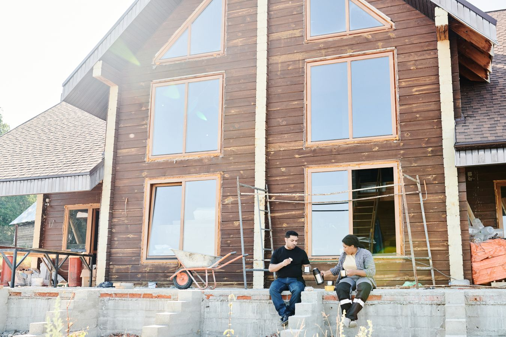
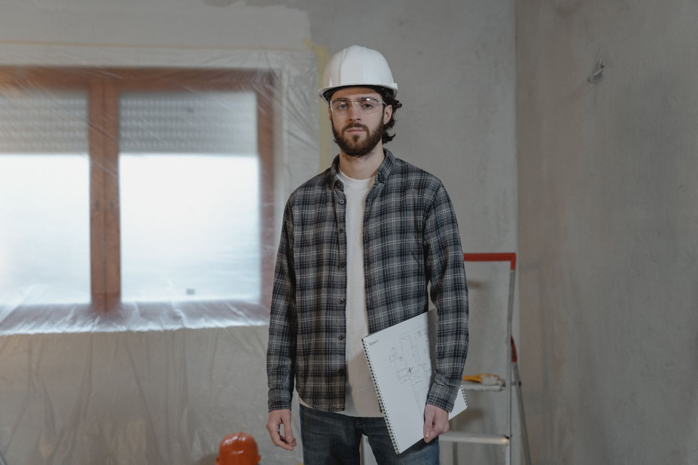

General renovation article. Reno Rise focuses on basement renovations and legal secondary suites. Dollar figures and timelines in this article are illustrative planning ranges from general industry information. They are not quotes, may be out of date, and have not been independently verified by Reno Rise. Get itemized quotes for your own project, and see our basement cost guide.
Quick answer: in the Greater Toronto Area, home renovation cost typically runs $35,000 to $400,000+ depending on scope. A cosmetic refresh starts around $35,000-$75,000. A mid-range multi-room renovation lands around $90,000-$180,000. A full gut renovation down to the studs can pass $400,000.
"How much does a renovation cost?" is a question with a $365,000 range of correct answers, which is exactly why nobody trusts the number they get from a five-minute phone call. The honest answer depends on how much of your house you're touching, how old your mechanicals are, and whether you're updating a kitchen or rebuilding one from the studs out.
Here are illustrative ranges, broken down the way an actual quote gets built — not the way a national calculator guesses at it.

Photo by Mikael Blomkvist on Pexels
What Drives Home Renovation Cost in the GTA
Three things decide whether your renovation cost lands at $50,000 or $350,000: how many rooms you're touching, whether the work stays cosmetic or opens up walls and mechanicals, and how old your house is. A 1960s bungalow with original wiring and a 4-foot crawlspace costs more to renovate than a 2005 build with the same square footage, because half the budget on the older home goes to things you'll never see finished.
Interior renovation cost also scales differently than people expect. Updating five small rooms usually costs less than opening up two large ones, because moving load-bearing walls and rerouting mechanicals is where money actually goes — not square footage on its own. Any professional should walk your home in person before pricing a single line item, because two houses of the same size can have completely different numbers underneath the drywall.
Home Renovation Cost by Project Scope
Most GTA renovations fall into one of three tiers. Here's what each one actually includes.
Paint, flooring, lighting, and fixture updates across one or two rooms. Same layout, same mechanicals, no permits.
Kitchen plus one or two bathrooms, new flooring throughout, some layout adjustments, updated electrical.
Down to the studs. New electrical, plumbing, and HVAC, structural changes, and every finish replaced.
Renovation Cost Per Square Foot in the GTA
Remodel cost per square foot is the number most homeowners ask for first, and the one that varies most by scope. A light cosmetic renovation runs $40-$90 per square foot. A mid-range renovation touching mechanicals and some layout lands at $120-$220 per square foot. A full gut renovation with structural work typically falls between $200 and $320 per square foot — kitchens and bathrooms alone can push a small area well past that ceiling, since they're the most expensive square footage in any home.

Photo by Tima Miroshnichenko on Pexels
Home Renovation Cost Breakdown by Category
A whole-home renovation is really five or six smaller projects sharing one budget. Here's roughly how a mid-range GTA renovation splits, based on general industry information.
| Category | Typical GTA Range | % of Budget |
|---|---|---|
| Kitchen | $22,000 – $65,000 | ~25% |
| Bathroom(s) | $24,000 – $60,000 | ~18% |
| Electrical, Plumbing & HVAC | $18,000 – $40,000 | ~17% |
| Flooring (Whole Home) | $10,000 – $25,000 | ~10% |
| Structural / Layout Changes | $15,000 – $45,000 | ~13% |
| Permits, Design & Contingency | $8,000 – $20,000 | ~9% |
| Paint, Trim & Final Finishes | $6,000 – $16,000 | ~8% |
If a basement is part of the scope, add basement renovation cost on top — most GTA basements run $25,000-$160,000 depending on whether waterproofing and ceiling height are already in your favour.
Cosmetic Refresh vs. Full Gut Renovation: Does the Word Change the Price?
It changes the price more than almost any other decision you'll make. A full house renovation that stays cosmetic — new floors, paint, lighting, fixtures — skips permits and structural work entirely, which is why it can cost a third of a gut renovation covering the same square footage. A full house remodeling project that opens walls, moves plumbing stacks, or replaces an electrical panel adds inspection cycles and structural engineering to the schedule, and that paperwork is not optional in Ontario.
The honest test: if you can point at your renovation and say "nothing moved, it just got nicer," you're in refresh territory. If anything is moving — a wall, a drain, a breaker panel — budget like a gut renovation, because the trades involved don't care how small the room is.

Photo by Isnar Silva on Pexels
The GTA-Specific Cost No Calculator Warns You About: A Bad Contractor
According to the Canada Mortgage and Housing Corporation, Ontario's renovation, maintenance, and repair sector is worth over $107 billion a year, and renovation spending is now growing roughly 2.5 times faster than new construction. That demand is good news for homeowners — until you notice that nearly a third of all renovation work in Canada happens off the books, cash-only, uninsured.
That gap is exactly why two "reno cost" quotes on the same house can be $80,000 apart. One of them is pricing a licensed, permitted, insured job. The other is betting you won't ask about either. A cheap quote from an unlicensed contractor isn't a discount on a full home renovation — it's a much larger bill with your name on it, arriving later.
Before you sign anything, confirm the contractor is licensed where required, carries liability insurance of at least $2M, offers a written contract and warranty, and can show a real portfolio with more than a handful of reviews. The Canadian Home Builders' Association publishes renovator standards worth checking before you sign. Reno Rise connects homeowners across the entire Greater Toronto Area with independent professionals; confirm each professional’s paperwork yourself.
Is a Whole-Home Renovation Worth It?
Kitchens and bathrooms return roughly 75-100% of their cost at resale — the highest return of any single-room category. A whole-home renovation returns less on average, typically 60-80%, because it includes lower-return categories like mechanicals and structural work that buyers expect but won't pay extra for. Where you land in that range depends on whether your finishes match your street or outclass it. A $300,000 renovation on a $700,000 GTA home is a much harder sell than the same renovation on a $1.5M home two streets over.
How to Lower Home Renovation Cost Without Cutting Corners
- Renovate rooms that share a wall or a mechanical line together — splitting them across two projects means paying to open the same wall twice.
- Keep existing plumbing and electrical locations wherever the layout allows — moving them is the single biggest per-square-foot cost driver.
- Get an itemized quote broken out by category, not one lump sum — vague line items are where markup hides.
- Phase a full gut renovation by floor or by system if cash flow matters more than speed, but plan the whole scope up front so trades aren't re-mobilized twice.
- Set aside 10-15% of your budget as a contingency. Older GTA homes tell the truth about their wiring and framing once demo starts, not before.
Frequently Asked Questions
How much does a home renovation cost in the GTA?
Whole-home renovation cost typically runs $35,000-$400,000+ depending on scope. A cosmetic refresh lands around $35,000-$75,000. A mid-range multi-room renovation runs $90,000-$180,000. A full gut renovation down to the studs can pass $400,000.
What is the average renovation cost per square foot in the GTA?
A light cosmetic renovation runs $40-$90 per square foot. A mid-range renovation with new mechanicals and some layout changes runs $120-$220 per square foot. A full gut renovation with structural work typically lands between $200 and $320 per square foot.
Is it cheaper to renovate a house or buy a new one in the GTA?
Usually renovating wins once you factor in land transfer tax, realtor commissions, and moving costs on a comparable home — but only if your renovation budget stays under roughly 25-30% of the home's post-renovation value.
Should I renovate room by room or all at once?
All at once costs less overall since trades and permits are shared across the project. Room-by-room spreads the cost over time but can mean paying to open the same wall twice if your mechanicals are original to the house.
How long does a full home renovation take in the GTA?
A cosmetic refresh takes 3-6 weeks. A mid-range multi-room renovation typically runs 10-16 weeks. A full gut renovation with permits and structural work can take 5-9 months from permit application to final walkthrough.
Do I need a permit for a home renovation in Ontario?
Cosmetic work like paint, flooring, and fixture swaps generally doesn't need one. Anything touching structural walls, electrical, plumbing rough-in, or added square footage requires a building permit from your local municipality before work starts.
What adds the most cost to a whole-home renovation?
Moving or replacing mechanicals — electrical panel, plumbing stacks, HVAC — adds the most cost per square foot, followed by structural changes like removing load-bearing walls. Kitchens and bathrooms cost the most in absolute dollars simply because they're the priciest square footage in any home.
Explore related cost guides and services: